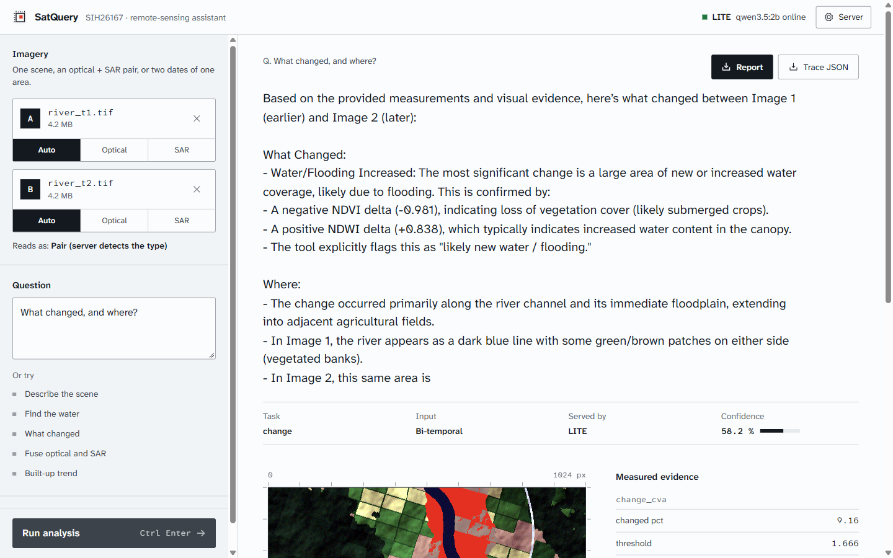
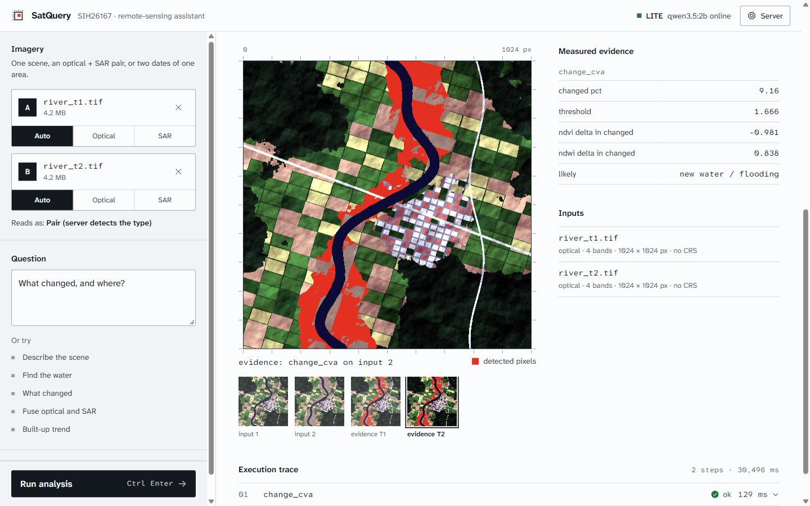
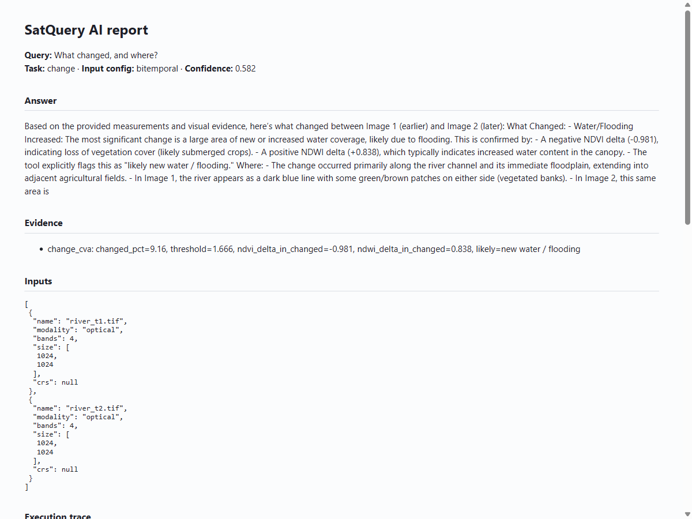
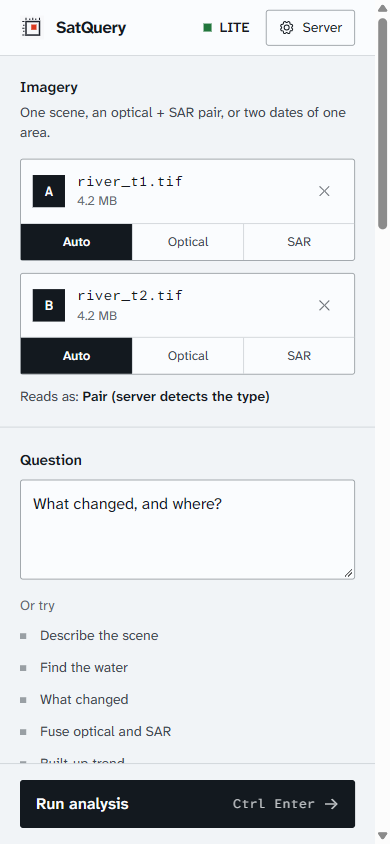

Ask the image.
Get the evidence.
An agentic vision-language assistant for satellite imagery. Ask in plain words about one scene, an optical + SAR pair, or two dates of one area. The tools measure first, the model answers with those numbers, and every step lands in a trace you can download.
30 s · 1080p60 · sound on. Scenes are synthetic test scenes; every number, answer, trace and box on screen is real SatQuery output on them.
Measures before it speaks
Water from NDWI and SAR backscatter, change from CVA with NDVI and NDWI deltas, fused optical + SAR. Masks are painted in one colour you can check.
Sees through cloud
Optical and radar run side by side; the fusion reports where they agree, pixel by pixel.
On the record
Each run keeps the plan, every tool call, its parameters, time and numbers, as an HTML report and a trace JSON.
The real app



